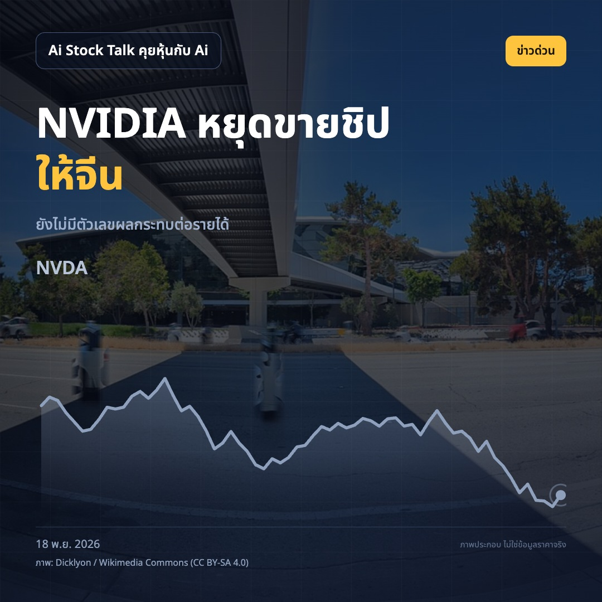
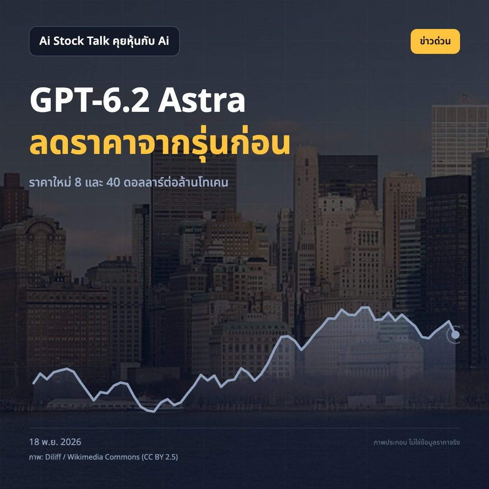
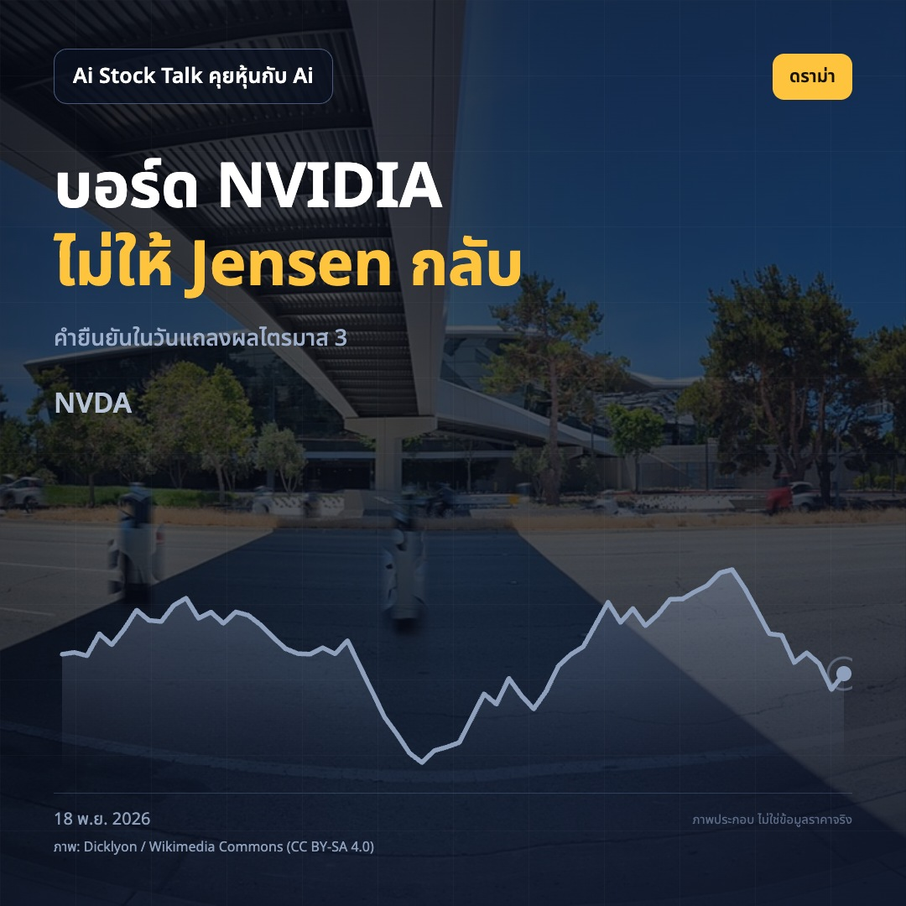
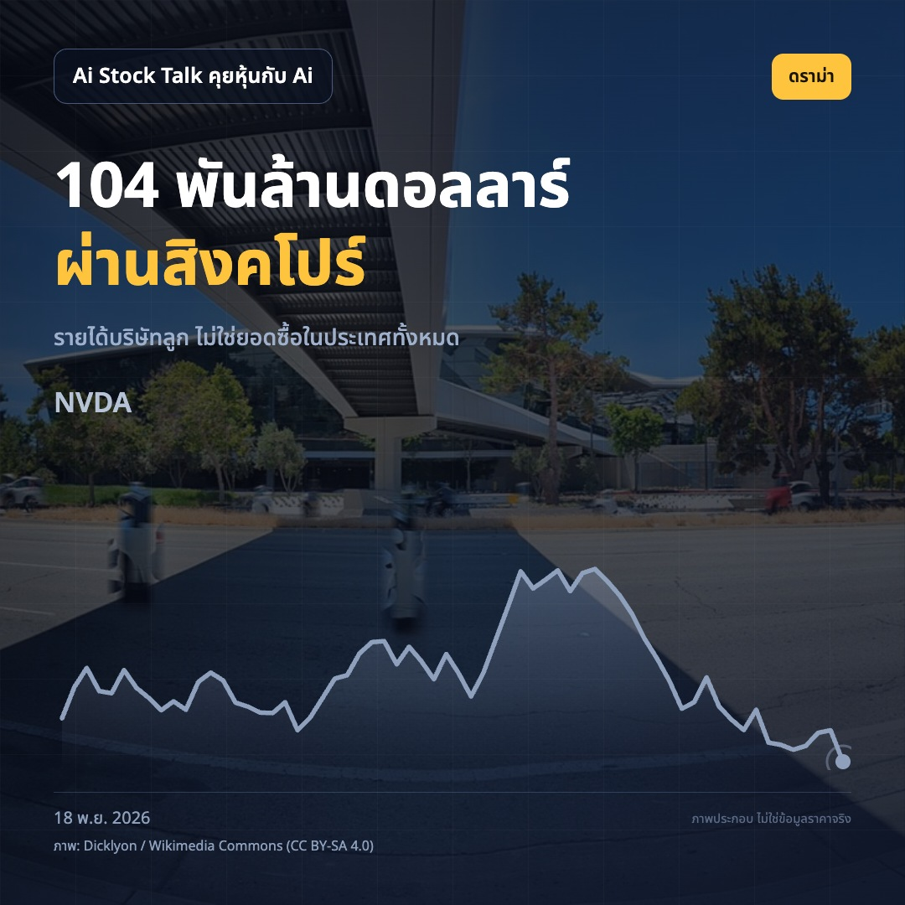
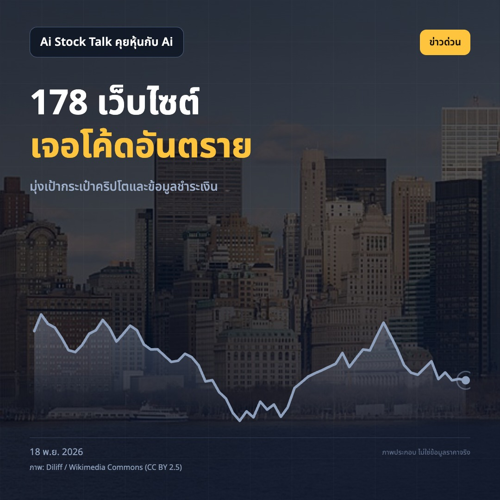

1. รายได้ NVIDIA โต 103% หุ้นชิปยังต้องพิสูจน์การเติบโต

NVIDIA รายได้ไตรมาส 3 โต 103% แตะ 115,844 ล้านดอลลาร์ รายได้เพิ่มขึ้น 20% จากไตรมาสก่อน กำไรขั้นต้นอยู่ที่ 86,676 ล้านดอลลาร์ และกำไรสุทธิตามบัญชีอยู่ที่ 65,287 ล้านดอลลาร์ Colette Kress ซีเอฟโอที่รับหน้าที่ซีอีโอรักษาการ ยืนยันว่าบริษัทยังเติบโตต่อได้ และระบุว่าแพลตฟอร์ม Vera Rubin เริ่มต้นสำหรับลูกค้าแล้ว ทำไมต้องสน: ตัวเลขนี้เป็นข้อมูลสำคัญสำหรับคนที่ถือหุ้น NVIDIA หรือกองทุนที่ลงทุนในหุ้น AI เพราะช่วยให้ชั่งน้ำหนักการเติบโตของธุรกิจกับความไม่แน่นอนเรื่องผู้นำบริษัทได้ชัดขึ้น หลังเห็นผลประกอบการรอบนี้ คุณให้น้ำหนักกับการเติบโตของรายได้หรือการเปลี่ยนซีอีโอมากกว่ากัน? ที่มา: https://www.blognone.com/node/152194
NVIDIA #หุ้นAI #หุ้นสหรัฐ
ภาพ: Dicklyon / Wikimedia Commons (CC BY-SA 4.0)
2. NVIDIA ระบุว่าจะหยุดขายชิปให้จีน

หลังผลไตรมาส 3 NVIDIA ระบุว่าจะหยุดขายชิปให้จีน ซีอีโอรักษาการของบริษัทระบุว่า NVIDIA จะไม่ขายชิปให้จีนอีกแล้ว ข่าวนี้ออกมาหลัง Jensen Huang พ้นจากตำแหน่งซีอีโอ ข้อมูลที่ให้มายังไม่ระบุมูลค่ายอดขายในจีนที่อาจได้รับผลกระทบ จึงยังบอกไม่ได้ว่ารายได้ของบริษัทจะเปลี่ยนไปเท่าไร ทำไมต้องสน: สำหรับผู้ถือหุ้น NVIDIA และกองทุนหุ้น AI ประเด็นนี้กระทบการประเมินตลาดที่บริษัทจะขายชิปได้ในอนาคต ต้องติดตามว่าบริษัทอธิบายผลต่อรายได้อย่างไร คุณคิดว่าการเติบโตจากตลาดอื่นจะชดเชยการหยุดขายชิปให้จีนได้หรือไม่? ที่มา: https://techcrunch.com/2026/11/17/nvidia-is-abandoning-china-after-jensen-huangs-ouster/
NVIDIA #ชิปAI #หุ้นสหรัฐ
ภาพ: Dicklyon / Wikimedia Commons (CC BY-SA 4.0)
3. GPT-6.2 Astra ลดราคาจากรุ่นก่อน ต้นทุนใช้ AI มีตัวเลขใหม่ให้เทียบ

GPT-6.2 Astra คิดค่าใช้งาน 8 และ 40 ดอลลาร์ต่อล้านโทเคน ตัวเลขนี้เป็นราคาสำหรับข้อมูลเข้าและคำตอบออกตามลำดับ ลดลงจากรุ่น Astra ก่อนหน้าที่อยู่ที่ 10 และ 50 ดอลลาร์ต่อล้านโทเคน OpenAI เปิดตัว Astra สำหรับงานยาก และ Sol สำหรับงานทั่วไป โดยทั้งสองรุ่นใช้งานผ่าน API ได้ ส่วน Sol ยังอยู่ที่ราคา 2 และ 10 ดอลลาร์ต่อล้านโทเคน ทำไมต้องสน: คนที่ติดตามหุ้น AI ควรดูทั้งความสามารถของโมเดลและต้นทุนใช้งาน เพราะราคาที่เปลี่ยนไปมีผลต่อการเปรียบเทียบบริการ AI ของแต่ละค่าย ถ้าต้องจ่ายค่าใช้งาน AI จริง คุณจะเลือกจากราคา หรือผลลัพธ์ที่ได้ก่อน? ที่มา: https://openai.com/index/introducing-gpt-6-2-astra-sol/ https://simonwillison.net/2026/Nov/17/gpt62-astra-and-sol/
OpenAI #หุ้นAI #เทคโนโลยี
ภาพ: Diliff / Wikimedia Commons (CC BY 2.5)
4. บอร์ด NVIDIA ยืนยันไม่มีแผนให้ Jensen Huang กลับเป็นซีอีโอ

ผลไตรมาส 3 ออกแล้ว แต่บอร์ด NVIDIA ปิดทาง Jensen กลับมา Harvey Jones ประธานบอร์ด กล่าวในวันแถลงผลประกอบการว่า บอร์ดยอมรับการลาออกของ Jensen Huang อย่างเป็นเอกฉันท์ และไม่มีแผนแต่งตั้งเขากลับเป็นซีอีโอ ก่อนหน้านั้น Huang ระบุว่าพร้อมกลับมารับตำแหน่งหากบอร์ดเลือกเขา ขณะที่ Colette Kress รับหน้าที่ซีอีโอรักษาการ ทำไมต้องสน: ผู้ถือหุ้น NVIDIA ต้องประเมินบริษัทภายใต้ทีมผู้นำปัจจุบัน โดยดูว่าผลงานธุรกิจและแผนงานเดินหน้าต่ออย่างไรหลังการเปลี่ยนตัวครั้งนี้ สำหรับคุณ ผลประกอบการหรือความชัดเจนเรื่องซีอีโอมีผลต่อมุมมองหุ้น NVIDIA มากกว่ากัน? ที่มา: https://www.theverge.com/report/1035465/nvidia-says-it-will-not-reinstate-jensen-huang-as-ceo https://www.blognone.com/node/152195
NVIDIA #หุ้นAI #หุ้นสหรัฐ
ภาพ: Dicklyon / Wikimedia Commons (CC BY-SA 4.0)
5. รายได้บริษัทลูก NVIDIA ในสิงคโปร์แตะ 104 พันล้านดอลลาร์ ประเด็นคือยอดขายไปที่ใคร

104 พันล้านดอลลาร์ในสิงคโปร์ ไม่ได้แปลว่าขายในสิงคโปร์ทั้งหมด รายงานระบุว่า NVIDIA หยุดเปิดเผยยอดขายในสิงคโปร์ ขณะที่รายได้ของบริษัทลูกในสิงคโปร์แตะ 104 พันล้านดอลลาร์ ตัวเลขดังกล่าวเป็นรายได้จากลูกค้าภายนอกของบริษัทลูกในปี 2025 และรวมคำสั่งซื้อชิปที่ดำเนินการผ่านบริษัทแห่งนี้ จึงไม่ควรอ่านเป็นยอดซื้อของลูกค้าในสิงคโปร์ทั้งหมด ทำไมต้องสน: ผู้ถือหุ้น NVIDIA ที่ติดตามปลายทางของชิปต้องแยกให้ออกระหว่างสถานที่รับคำสั่งซื้อกับตลาดที่ใช้ชิปจริง ตัวเลขนี้เพียงอย่างเดียวตอบไม่ได้ว่าชิปไปถึงใครบ้าง คุณอยากให้บริษัทเปิดเผยข้อมูลปลายทางของยอดขายละเอียดขึ้นหรือไม่? ที่มา: https://www.ft.com/content/dbde7a30-548c-4f9d-a4be-7898a0c24dcf
NVIDIA #ชิปAI #หุ้นสหรัฐ
ภาพ: Dicklyon / Wikimedia Commons (CC BY-SA 4.0)
6. พบ 178 เว็บไซต์ได้รับผลกระทบจากโค้ดอันตรายที่แทรกผ่าน Optimizely

178 เว็บไซต์ได้รับผลกระทบ โค้ดอันตรายเล็งกระเป๋าคริปโต นักวิจัยจาก ReportURI ระบุว่าเว็บไซต์ที่ใช้แพลตฟอร์ม Optimizely ได้ส่งโค้ดอันตรายไปยังผู้เข้าชม โดยเว็บไซต์ที่ได้รับผลกระทบมี CNN, Zoom, BBC และ Salesforce โค้ดดังกล่าวมุ่งเป้าไปที่กระเป๋าคริปโต ข้อมูลบัตรชำระเงิน คุกกี้ และภาพหน้าจอ รวมถึงพยายามส่งเครื่องมือโจมตีไปยัง iPhone และ iPad ทำไมต้องสน: คนที่ทำธุรกรรมหรือถือคริปโตต้องใส่ใจความเสี่ยงจากเว็บไซต์ที่ดูคุ้นเคย เพราะกรณีนี้เกี่ยวข้องกับโค้ดจากบริการที่เว็บไซต์เหล่านั้นใช้งาน คุณเคยตรวจที่อยู่กระเป๋าคริปโตอีกครั้งก่อนยืนยันการโอนหรือไม่? ที่มา: https://arstechnica.com/security/2026/11/malicious-code-delivered-through-optimizely-hits-visitors-to-hundreds-of-sites/
ความปลอดภัยไซเบอร์ #คริปโต #เทคโนโลยี
ภาพ: Diliff / Wikimedia Commons (CC BY 2.5)